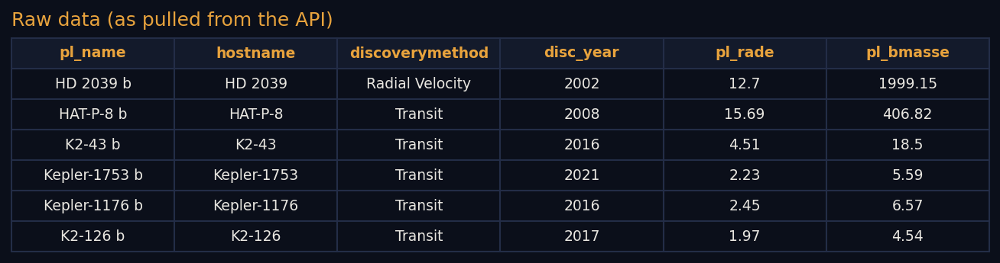

Data Gathering
Data Gathering
Primary source: NASA Exoplanet Archive API
Website: exoplanetarchive.ipac.caltech.edu
Core endpoint (Table Access Protocol, synchronous query):
https://exoplanetarchive.ipac.caltech.edu/TAP/sync
Example GET request pulling key planet and host-star columns from the Planetary Systems Composite Parameters table:
https://exoplanetarchive.ipac.caltech.edu/TAP/sync?query=select+pl_name,hostname,discoverymethod,disc_year,pl_orbper,pl_rade,pl_bmasse,pl_eqt,st_teff,st_rad,st_mass,sy_dist+from+pscomppars&format=csv
Retrieval code can be found here: fetch_exoplanet_data.py (Python, uses requests and pandas).
Secondary source: PHL Habitable Worlds Catalog
Website: phl.upr.edu/hwc/data, maintained by the Planetary Habitability Laboratory, University of Puerto Rico at Arecibo. Downloaded directly as a CSV, not via API.
Matched against the NASA Exoplanet Archive pull by planet name: 5,565 of 6,366 planets found a match. The remaining 801 are planets confirmed after the catalog's last update and have not yet been assessed by it. Each matched planet carries an official habitability classification (not habitable, conservative sample, or optimistic sample) and an Earth Similarity Index score.
Full secondary source file: hwc_full.csv (5,599 rows, 118 columns).

Full raw file: exoplanets_raw.csv (6,366 rows, 12 columns).